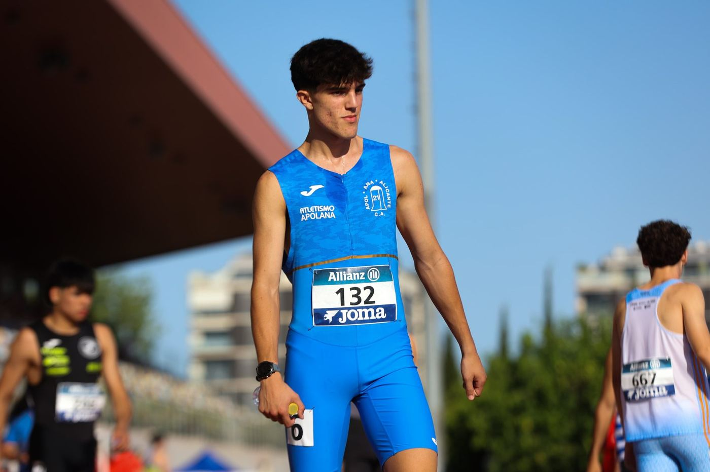

3 a 17 años
Escuela de atletismo
Iniciación y desarrollo del atletismo: correr, saltar y lanzar en forma de juego en las categorías pequeñas, y especialización cuando toca.
Ver la escuela ›
6 a 15 años
Escuela de natación
Aprendizaje y perfeccionamiento en las piscinas del Tossal y Vía Parque, con grupos reducidos y opción de competir en federado.
Ver la escuela ›
Programa municipal
Escuela municipal de atletismo
La gestiona el club dentro del programa del Ayuntamiento de Alicante. Mismos entrenadores y metodología; la inscripción y el precio los fija Deportes Alicante.
Ver la escuela ›
Verano · abre en mayo
Campus de verano
Días de deporte, juegos y piscina para los meses sin cole. Las inscripciones se abren en mayo; entra para ver cómo fue y avisarte.
Ver el campus ›